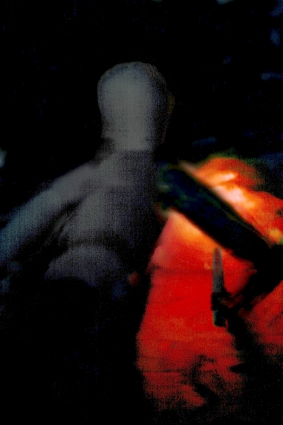

Slope (Part 1)
by
Andy Robertson
In the dark.
He strains to see. What? Where? Why is he here? He is constantly rebuked, continually told to be silent. He must not speak, he must not speik, above all. Hands guide him, fists strike him if he does wrong.
They slither among the hair-fine bushes, all alert for something he cannot understand.
Where? Where? Stillness.
Now the other men surround him. A pressure, a tension, relaxes.
He awakes.
Fourteen miles beyond the Quiet City. Casualties 194.
There is a dull loom of light from behind and above. Ahead, there is nothing but blackness. The host moves slowly in the grey dark, without either climbing or descending very much, blindly following their Helm indicators north. The land slopes up gradually and to the right and by the testimony of foot and knee and gauntleted hand scrabbling in the dark it seems to be a kind of stepped plateau covered with overlaid fans of rock scree, but it is impossible to see well enough to be sure of this.
There are stops and changes of path but they rarely have to backtrack. Whenever they must pause they sit or squat, silent and patient, resting without question.
He is half way Out, along one spine of the five-ply formation that they keep to even in this dark. Tomorrow he will be further Out. He can feel where he is within that body of moving men as surely as he could feel the place of a finger tracing over his flesh.
They walk. They scramble over rocks as rough as uncreated shards of night. They fall, rise, and continue, and after a time defined by no clock, they stop. There is no order given or speech exchanged, but each man knows what he must do. The outguards take the pattern infinite star, and behind them the five falchions are set up, silently rendering stones to smoothness in their guts.
There is time for sleep. There is no search for shelter, no huddling. They do not speak to each other even now. They squat and lie where they are, wrapped in their black cloaks puffed with inert gas. There is no room for fear. Too sharp an attention is necessary for even fear to find room in their hearts. And yet they sleep.
They are awake again, Out here, where there is neither sleep-time nor wake-time ever. The darkness within each head opens, and looks forth, and finds only darkness in the universe around it.
There has been no attack while they slept, but the men at the five tips of the star must be drawn back in to the body of the host, while others walk Out. And so it is performed. The process is not spoken of, it is all done without speaking. Nobody speaks here, nobody communicates except to indicate action and direction by quiet fast downturned movements of the hands as they exchange places. Nobody shows their face for even a second or allows their unprotected heads to be exposed to the Night. All goes smoothly.
But, as the falchions are being dismounted, there is an alert. A gunner swivels to track a nearby moving blackness, and instantly they all fall into a crystalline pattern, freeing his field of fire and supporting him. Other spots of motion are sketched in by the Helm imaging systems and the two flanking falchions limber up, exposing short barrels. They scan the darkness around them, and now the movements become undeniable, Out there in the dark. Something is coming, something is moving from the Night. Fourteen things advance, overlapping black curves of muscle and limbs, moving with a slow rolling grace, slow, then whip-fast over the last twenty fathoms. A frantic glee fills him, and he runs forward, but the falchions spit bolts of stone through the attackers and the other men rush to meet them, wrapped in coils of black as they join but lopping and slicing themselves easily free. The Beasts are dead or fled before he can strike.
Only three of the things return to the cover of the darkness. Nothing from them, not so much as a touch.
Their nightsuits are not the heavy amplified coverings used by the Watchmen for patrols or close exploration work. They are as thin as cloth and as light as paper, unamplified and uninstrumented. Their only augmentation is in the complex filters in the Helms, which make up thirty percent of the suits' weight and consume all their power. Long ago, men could survive in the Land by relying only on their own senses. Now they must wear the Helms, which mount shields and sensory enhancements on a pattern two million years old. The Helms capture and amplify sound, and scavenge what little light there is in the Night Land. They map the paths through the dark, and they pass messages to other men in ways that hopefully are not obvious to the entities of the Land, where even telepathy is too risky to be used. They enhance and they communicate and they also protect, for they shield the eyes as well as the Soul from that which can destroy merely by being sensed.
If he stands high and free in the Land he can see lacunae where the Helm's shielding intervenes, blinding his eyes because to see the things there would kill. It is Forbidden to look back, but he has seen. There are six great gaps in the view of the Land, in the sensorium of the Helm, where the things too terrible to be viewed must exist, for the Helm does not permit him to see any thing there.
Another day of darkness passes. They move slowly. They span across the Land like the nodes in a crystal, just far enough apart from each other that they cannot touch each other with the diskos and no further, like a flexible crystal. It is all barren here, without vegetation, without structures, without light sources, and seemingly almost without life, yet from time to time something is detected Out in the dark and they stop or change course. They avoid conflict if they can. There are no more attacks, not today.
It will be his turn to be an outguard soon, and to patrol near one tip of the star. He anticipates this with a dull anxiety. It is the pattern of time here: the periods of greater stress and danger when he is further Out, and the times of lesser threat when he is within, are all that marks the passage of the days. But it is not yet his part to walk Out and guard the others. That will come in a few days.
This alternation of greater and lesser fear is the skeleton on which memories are strung. Though the cycles of the past blur together he knows they go from one place to another. They are going to somewhere. They came from somewhere. He can remember the early days of the journey, when there was more light, and there were more attacks than there are now, and the host was more numerous. There were hordes of things that looked like men, some of them much bigger than men, and they fought them again and again and ran for hours in terrible exhaustion but in disciplined ranks without panic, fighting as they ran. And there were much larger creatures that threatened them, vast and terrible, each one unique. Almost the earliest thing he remembers is a gush of violet fire that smote down from somewhere behind them and consumed one of these monstrous attackers. But he did not look back.
What happened before that? Where was he, where were they all, before that?
Is this all of existence? To cross a land full of Nightmare, a dark land?
He can remember nothing before this. This is life.
Some of the men are different. There are two kinds of men in the host, and one kind is shorter and wider-hipped and a little awkward, and is allowed to stay in the centre of the host, where it is safer, carrying burdens. This is obviously the right way to treat them.
Clouds of glittering light sweep by them, shedding no light on the Land or on any thing but themselves. They stand absolutely still as the clouds approach. No-one moves. Something inside him knows these things are deadly dangerous and his Helm is screeching warning and despair, but he does not move or think. He does not react. He does not think. The Lights pass on, undeviating.
Another sleep, another waking. They move on through the Dark.
Another alert passes from the right flank outguards. Something is near. A group of entities is near, is approaching. There are hints of sub-ulfire moving in the far distance, ducking behind rocks, the glow of heat that a man might show if he foolishly opened his mouth: and there are sounds in the Silence, that might be communication. The outguards have taken posture of alert, and their knowledge travels through the host.
He is in the second or third rank. He cannot yet see the intruders, but he is obedient to instruction and the common intent of the host. He waits patiently until he sees pale entities, bipedal, mere Helm traces in the long wavelengths, advance from the cover of nearby rocks: and then he shifts smoothly into attack stance.
The things come closer and closer. They are human in size. This is not like the other attacks ((his Helm automatically scans the eight-steradian solid angle above around and behind him and checks, no motion, no life, no pneuma traces except his comrades: only these small, few, things ahead of him)) and they keep coming, visible to the unenhanced eye in the gleamings of deep ulfire and distant unearthly blue from behind them. The things keep coming forward, and then stop. They gather together. And one comes forward alone.
Its head is huge and distorted, and he sees suddenly that it is wearing a head-covering, a jug, a Helm, and that it moves in a way that is like a human being, and it holds a broken discoid club from which motes of light drift. Which it puts down. And it opens its hands. And it speaks, thin choked sounds with a strange rhythm.
He sees no more because there is an abrupt surging forward of the flanks ahead of him, and the figure falls, cut apart, with a dreadful weak cry; and the other strange figures scatter.
There is a pause. Then they move on. But as they move on past the site of the encounter he is able to glance down, and sees the Helm has been knocked off, and in the distant shinings the figure lying broken on the rocks has a starved skull-like face with a white beard, and long pale hair, and the face is not the face of a monster.
Why am I here?
I must endure.
But I cannot, I cannot remember.
I cannot.
From time to time he does things that he knows are wrong.
The suit and weapons, the diskos and the Helm, are like parts of his body. The diskos stores power from the same trickle of energy that feeds his Helm, led from generators in his heels through his armour. Its grip is textured to his hand and loops round the smallest finger: its shaft is not straight but is very slightly curved from an offset and angled and grooved and tapered section which fits his palm and thumb as the joints of his bones fit and requires no effort to hold for hours. It is hard to imagine that he was ever separate from this perfect weapon.
But sometimes . . he finds himself activating it. When there is no need. It has only three settings, on, off, and high, and he finds himself activating it and then turning it off, activating it and then turning it off, wasting power, for no reason, when there is nothing near.
Reset/ Reset/ Reset/
This comforts him a little.
He keeps wanting to look back, but he knows that is Forbidden. There must be no thought of going back.
The Lights come again, and again they freeze where they stand, unthinking and unmoving. But this time instead of sweeping past without hesitation the swirling beautiful sparkles slow and change course. They swarm towards the host, at first just a few, then in masses. They are arrayed in many distinct spindles, twirling slowly on a vertical axis. Their size and their distance cannot be judged well because the each constellation expands and contracts wildly and the individual sparks within it are mere points without dimension, but they are coming closer and closer. Something like fear invades his thrice-burned mind as they approach, but there is no possible place to flee, and he must stand still.
The Lights are closer than they have ever been. The information in his Helm displays reaches a crescendo of urgency. The symbols before his eyes shape EIHWAZ and then EIHWAZ MERKSTAVE and he knows that it is an instruction to take an ultimate retreat, but he cannot retreat, for a reflex or pattern he would have followed is somehow not functioning. Part of him tries to panic, but that too is intercepted by the same imperative force that keeps him standing still, and deep within him he feels some process start. It is not from the Lights. It is from within, a response or defence. He feels as though he is being simplified, reduced, disguised as something less than he is, as inside him some thing gathers.
The Lights come yet closer, and the tension builds inside him, not fear but a tension he cannot interpret. It builds and builds to a bursting point and then something soft opens and a sudden flood of sweetness smothers him, a feeling that is so disconnected from the environment around him that for an instant he is more frightened of it than the Lights. But in seconds, he is lost inside himself. He remembers another place than this. He remembers a place as soft as his own flesh. He remembers warmth, and sounds that were not screams in darkness or the clack of falling rock. He remembers a face more beautiful than any thing he knew could exist and he strains to remember more. His flesh prickles and his eyes tear, his throat is thick, and inside his armour he is painfully and uselessly erect.
Terrible things are happening near him, his neighbour is dancing and jerking as the lights sweep through the man's armour as if it did not exist and concentrate in a ravenous vortex along the axis of his spine: but he can only think of that sweetness and that beautiful, beautiful, face. The blizzard of lights leaves its first victim and flickers round him, but they do not seem to perceive him or to be able to reach him, and when the lights pass on leaving the Eaten dead he is still thinking only of that memory or dream, still trying to remember he knows not what, still thinking of that beauty.
There are fifty-two victims. He understands that they have suffered some form of attack but there is no grief and no sorrow among them. Each dead man is become unreal, is no more in the Darkness than another tangle of rock. They have become part of the Night. They scavenge food tablets and power capsules from the bodies and leave them.
The sleep-time comes, and they stop, and soon he falls from consciousness into the inner night. And yet in his heart there is now something other than darkness. Something wonderful has happened to him: there is the memory of the vision, the sweetness. He cannot achieve the true vision again, but he clings to the memory, and holds it near to his heart. He hopes to dream, but dreams do not visit him in the Night; and when he wakes he finds he is hoping the Lights will return.
The next day he is outguard. It is his turn to be near one tip of the shrinking, tattered, star, and he finds he is in the rear, in the backward-pointing arm, the last of the host. He is not quite the very last of all; there is one that walks beside him, and there is one that walks behind them both, but he knows this is the position where people die. Their numbers are growing fewer. They started with Five hundreds. He knows what that means. And now barely half are left.
They move on through the night. It is his duty to scan every where. Every fifteen paces he turns a complete circle, scanning the Night, to alternate sides: he is graceful and powerful even in his armour, you would think he was dancing. The extra effort rouses him to a higher level of physical awareness and he feels the weight of the nightsuit, the prickle of his skin, the places where it chafes a little, but he puts those sensations aside. His Helm scans at high alert, concentrating on the landscape traces behind him, partly masked by the one man at the very rearmost tip of the star. There are movement traces. There are low-level animal traces from insects and arthropods. There are the slow pulses of geovore stromata here and there, but these are no threat if they are avoided. There are larger and more active entities, far back: He concludes they must be gathered round the dead, feasting, and sonic amplification brings him some hint of a combat that must be desperate.
There is a little more light here, occasional streaks of bioluminescent jale under rocks, and sparkles of volcanic flares from some deep source, but this means more danger.
Far behind it all in the Night are the many disparate sources of light that indicate the lowlands they came from. In the centre is the single great gap his Helm imposes on that distant landscape. And sometimes when they crest over some low ridge he sees the five lesser voids round it. He strives to avoid being aware of all this.
The Land seems even more barren here, though there is more light in this region of low volcanic flares. But they really are being followed. Once more he sees things that might be the bipeds who approached two days ago. There are barely a handful of these entities and they move as silent as ghosts, ducking behind rocks and crawling, but the Helm systems detect living warmth as well as light and their heat traces cannot be hidden. He ponders whether to give an alert, but the threat does not rise far enough above noise level to move him to action. A low pulse of warning nonetheless seeps across to him and his mate from the very last man, and they both fall back to support him, staring across the dark. But it proceeds no further than that. The intruders seem content to follow them without attack and the host is not delayed in its slow crawl through the Night.
But then there is a stop, a dead stop. He continues to scan the Land behind them but by the movement of the men in the host and by the messages communicated without words it slowly becomes known that they cannot go on. There is some thing ahead of them. The Helm indicators point north and in mindless obedience to that they would all continue, but the obstacle, whatever it is, lies square across their path and they must turn left or right. The host has no central brain that will make the decision and no captain, only an unspoken relayed cybernetic consensus, but now the consensus does not form. The Helms keep urging them north. They wait, and they wait, but a clear common intent does not form, and their unity is broken. Each man tries to follow his inbuilt instructor and finds that his neighbour has not made compliant action. It almost seems that this body of men that has fought past giants and monsters and pneumavores may be destroyed by this simple thing, for for the first time there is dissension among them.
He waits, counselling himself to patience and scanning the Night, but there are more reasonless flashes of ulfire and red light from ahead, volcanic flares, and at last he forgets his duty and forgets his place and turns to stare ahead to try and understand the delay: and swiftly turning back with a start he realises he and his mates have been crept up upon. One of the strange bipeds is close, is no more than ten paces back. He signals alarm and moves to attack it, and his companions and the whole body of men spring once more into harmony. They surge towards the intruder and it is suddenly very close to him. There are flashes of red light again, and one shines upon it clearly, shines brightly upon it, before it turns and flees back into the shelter of the rocks.
Eventually they turn left, downhill, west. He follows in his proper place. To his right is the obstacle that stopped them: a slow glacier of dull ulfire coals, scabbed with black and veined with liquid red, flowing from some new-opened vent of the Land's volcanic forces, unmapped and uncrossable. But he keeps looking behind him, and now it is not mere duty that prompts him. The figure coming out of the dark into the sudden clear light was different and significant somehow. The Helm systems categorised it unambiguously as abhuman but it was different. Those few instants replay themselves in his memory as he tries again and again to see it more clearly. The heat traces in the Land are now masked by the glow of the lava river, which is brilliant in the sub-ulfire wavelengths, and he cannot easily detect any tracking lifeforms following, but he keeps looking. Again and again, he revisits his memory of that sight.
That sleep-time he strives to remember the beauty that visited him when the Lights came, but now that thought is mixed with something else. There is a new thing he has seen, and that he cannot forget, though he cannot understand why, and deep in his sleep he is visited by dream, for the first time ever in his memory of this life
In his dream he is somewhere different. He is in a place where it is not dark, or a place where the texture of darkness is different from the Land. It is dim but there is no fear in the dark. It is dim not because it is a place of horror but because it is a place of holy kindness. It is a cave, it is an enclosure, it is a house, and inside it is smoothed by human hand, and he is there in the innermost part of it where it secret within secret.
There is someone with him, veiled and swathed in dark clothes. She has drawn him here and now she is alone in the secret inner place with him.
She lies down, between him and the wall. But her face is veiled and swathed in blackness.
When they wake once more it is his time to be Out. Today he will be the very last of the host, and this sleep-time he will be alone to watch with a few others while the rest sleep under his guard. If he survives he will once more be safe, deep within the crowd of other men for a time.
He moves to his place not thinking of his increased danger. Thinking of his dream, which still fills his mind and seems more real than the Land. Yet only fragments remain, impressions, intentions, summations without detail. He cannot explain to himself what happened in the dream, and as he strives to fix it in his memory it fades. Then, guiltily, he turns to his duty, and they begin.
They are walking downhill quite steeply now. This is bad. The lowlands are far more dangerous. He remembers that much from the early days.
They swerve to the right but are stopped again by the river of lava, still impassible though cooler.
He is not distracted again. Every fifteen steps he scans, to right then to left, and there is nothing following that he can see. But they move more and more into regions of confused light and perversely his Helm-extended senses can see less well here, where there is more background radiation to confuse the heat traces. Yet nothing seems to be following.
There are occasional clumps of vegetation here, intermixed with cryptid predators which project barbed whips at anything which touches a hair. These cannot penetrate their armour but they are prodromic of what waits in the lower regions. Ahead of them now and to the left are the dull glares of distant light, and remembering what they fought and fled when last they were among those mists and fires he shivers.
Turning again to scan he catches movement and stares: it is gone.
They move quickly, downhill, and more and more often small beasts are seen to flee from them, scuttling from under rocks or bushes.
They pause, some question of the path, and he catches the movement again. He freezes in his scan to look more carefully, and he looks, and looks, and tries to puzzle out the dim hints of shape in the night, and suddenly the figure he is watching for rises less than twenty paces away, showing itself quite clearly in the dim glow. It rises and stares at him. He stares back. It is not some horror, it is not a beast, it is surely not one of the abhumans, it seems to be clothed somehow, its face is...but turning in sudden fear he finds he is alone in the Night.
He panics and starts to run, running directly forward, and in seconds he almost crashes in to the flank of the star. He is far from where he should be, and the Helms of the rear rank turn to track him all together as he returns to his place, as if he was another thing coming from the Land.
They continue, continue until it is time to stop. He looks and searches the Night behind them again and again, but no one is following that he can see.
The time of sleep comes and they stop, and stopping they rest, but this sleep-time he must not rest. It will be his part to stay awake and guard. And very quickly then he is alone, at the rear of the host, looking out while the others sleep.
Seven paces behind him the black mouth of a falchion, once more assembled from the loads carried by seven men, weaves and darts looking for intruders. The other four outguards stare into the Night from their places at the other points of the star, far from him. The men sleep in rows, almost touching each other. They all sleep. He feels utterly alone.
All through the sleep-time he watches. He expects to see the strange figure again, it seems a rule that it must happen, and yet he sees nothing. There is neither true sleep-time nor wake-time here, neither light nor utter utter dark, neither comfort nor fear (for fear requires that there be somewhere to flee, and there is nowhere to flee, Out here in the Night Land), only the endless threat and the endless watch without duration. His armour is locked and he stands at tripod with the diskos balancing him. His Helm is at full power. He scans near and far, then near again; opens the sonic amplification to maximum, hearing the distant rattle of crabs under the thunder of his breath, and then dwindles it down to normal: checks for heat in the sub-ulfire (still washed out with the glare from the North, but less bad now, to-morrow they may try to turn north again) and then looks for the twining jale of alien pneuma traces. Nothing. Nothing.
But his mind starts to drift off, remembering ... what?
Not the dream nor the vision of beauty nor the figure from the Land, but something else again. A memory ticks at the edge of his mind. He stood like this once before, guarding against some thing, with allies behind him, defeated and retreating. But he was not in the Land. He did not hold a weapon. Others surrounded them, but those others were human, and they were not fighting as they fight beasts with weapons but fighting in some other way. And they lost the fight, the fight fought without weapons. They lost, and were doomed to...
He tries again to remember, and the memory flees. He watches all through the sleep-time, trying to remember, trying to see, but there is nothing else.
The time of waking comes at last, without light or change. Why does it disappoint him that nothing came from the Night? Why is it with a heavy heart that he turns to move into the centre of the host and comparative safety? The falchion behind him is being taken down, and as he turns to help he thinks that perhaps, just perhaps, he has seen something Out there. He knows he must not show alarm. He continues to turn away and he walks to the safer place without looking back. Yet as he turns, his hand, moving by itself, has taken three food tablets from his pack and is dropping them at his feet: and his boot, as he pirouettes, shifts cold gravel half over them so no-one will see them. He cannot explain even to himself why he does this.
He is safe, he may rest from being alert, but it comes to him how their numbers have dwindled, and how little safety there is here, and how soon he will be Out again. For the first time he looks forward to the future, and sees a vista of days and of cycles that beat ever more quickly until he is alone and always Out in the night without a single companion. A little terrible wailing starts up in his heart, and slowly dies.
He plods on, not thinking of the future. There are enough threats in the present. They are trying to turn north again, but obstacle after obstacle hinders them, here on the fringes of the dangerous lowlands. From time to time organised bands of creatures are being seen at the extreme limits of the Helm sensoria and he fears that some sort of cooperative attack may be pending. Also, the Land here is marked with clumps of vegetation and even with ruined structures, which they avoid scrupulously, keeping at least five hundred fathoms from any thing that looks as if it was once built by hands human or other. They pass through an area dotted with these ancient ruins, low twisted things that seem to have been melted and regrown from the ground, connected to each other by a sparse net of black fibres. Some of the buildings have electromagnetic traces that may be of defence and detection systems: his Helm sketches an overlay analysis of this doorway or that stubby turret and he hears digital calls on the radio bands. In other places drifting motes of green light fall in streams from ruined equipment embedded in or growing from the warped stone, and these buildings they are especially careful to avoid.
It is only when they see a structure not behaving as rock or stone should that they stop. Ahead of them is a dark conical building at least thirty fathoms tall, showing heavy electromagnetic activity traces. There is something wrong with it, something very strange indeed even in this Land, for though it does not seem to be moving it appears to be coming closer faster than it should by their walking alone, as if there was something wrong about distance and perspective in the space near it.
They stop, but the Cone is still close and is somehow drifting closer. Perhaps it is an illusion but it seems to be closing between each glance, as if it is not moving when he looks at it but is somehow closer every time he looks back from glancing away.
There is instant consensus. They retreat, and after retreating for a mile they make a wide detour to the left. But as they press forward along their new path there is the Cone again, looming at the limits of detection directly ahead of them. They try a different path again, and are once more blocked. In desperation they turn in complete reverse and move back towards the uplands, but as they move forward something is ahead of them: the Cone, standing square across their path, seeming to be rooted in the ground and immovable, its flanks twisted like dark wax.
They stop again, and hesitate in confusion. On a venture he cuts out his Helm compass and attempts to re-orient using only landscape cues. Possibly the Cone or whatever dwells inside it has been interfering with their Helms, for the information this gives tells him that he has gotten turned round, that they are running downhill again, that his compass is awry, the Cone has not moved or has not moved much but is interfering with their cybernetics to draw them to it; and his Helm flashes this correction to the others.
They cut right at an obtuse angle and by navigating by the distant lights alone they manage to stay on course. The Cone does not reappear.
Suddenly there is another attack, completely unexpected. A mass of weapon-bearing hominids, powerful creatures about twice the mass of a man, come surging at them from an ambush in the cover of the rocks. He fights and as always his weapon cleaves his foes like water, yet stones and clubs rain upon him and he is half stunned before the first flood of enemies is stemmed. They are badly formed after their flight and it is minutes before they can make the pentagon properly and many of them fall. When at last the attackers have been driven off he dares not number the dead.
More enemies approach and they flee again, climbing the path they descended and undoing all the travel of days. Something dies in his heart.
Many are hurt. Seven more men have fallen out or been lost to trapping predators in the panic flight (a cry, a fall). There remain only the parts to assemble one falchion. He is hurt, his head swimming and thumping and half his Helm systems dead, and now he sees the Land with dual vision and hearing. His left eye and ear still have the Helm's augmentation but his right are unenhanced and he sees the true blackness of the Land through them. And he is half unprotected. Half of him may be sensed and Eaten.
He is in the right flank as they climb back up into the Night. How many are left? Barely a Hundred now. The future closes down upon him: it will not be long.
They find a comparatively safe place where they cannot be approached without warning. They rest and he drifts off to a half-dazed sick sleep. Again, he dreams. He is in a bright place where he stands and faces one who regards him with a beautiful face and speaks to him with hate. The remembered words of rejection come to him, meaningless except for condemnation, and he wakes up with a start. The brightness of the dream overlays the blackness of the Land, but their bitterness is the same; for the others have finished their rest and are moving on and he is being left, perhaps left for dead. He rushes and staggers to catch up, his wounded head pounding.
They stumble upward. He is still on the right flank. There is some order remaining. They are badly hurt but they still hang together. The pursuers have dropped behind.
His right eye seems blind compared to the enhanced data flooding into his left, but his right ear, oddly, is picking up occasional sounds that his left is not hearing. Are they still being followed? These are not the sounds of pursuit. They almost seem like the sounds of human speech.
They rest again. There are still an hundred or so, and there is still a falchion in working condition, but now the others huddle and jostle together each trying to be closest to the centre and safety. But he does not. He is feeling stronger or he needs to believe he is, and he voluntarily walks the rim, with two or three others.
There is something he is watching for, with desperate hope. And it comes.
Beside them, showing quite clearly now in ordinary unenhanced vision, not far from him, a figure rises and stands in the Night.
He does not attack. The Helm is classifying her as abhuman but now his right eye can see her face in the dim red light of lava flare quite clearly.
She speaks to him, and he hears her through his right ear, the ear that is not protected by the machine which filters out the lies and deceits of the Night. He is hurt and he is unprotected and her words cannot now be denied. They are too weary to pursue or attack her and she will not be driven off, and she is speaking to him.
She is saying: "Take it off. Take off your Helm."
Behind him the others gather like jointed faceless dolls. Before him she kneels: a woman, thin, worn, blackened, wearing a tattered undersuit caked with gods know what filth, but human. Her uplifted face shows beautiful in the red light.
Her hands gently lift to touch his Helm.
He waits in a horror of unknowingness and hope. Is this death? Is she a madness or an illusion from the Land? Or has she come here from the place of his dreams, and will she take him back there?
What loss can he suffer? He raises his hands to his neck, releases the catches, and lifts off the Helm.
Bareheaded, he knees to match her, fainting. She midwives his rebirth. The pneumasomatic blocks are removed with the Helm, and memory and knowledge erupt in him and stream over him. He remembers where he is, and what he is, and what he was dreaming of. He looks into the Night with unprotected human vision and far away and unfiltered now by any machine he sees the Final Light shining from the peak of the Redoubt. He looks to his ancient home and remembers what happened and why he and his people are here and how they were sent Out.
Tears fill his eyes, but he cannot even now look at Mother Redoubt with hatred.
He almost dies. He should have realised that kneeling like that, touching what is classed as abhuman and Helmless, he would himself be seen as a danger or as one fallen to the other side. Some instinct warns him, a scuff of boot on rock, a hiss of breath, or the flick of her eyes and the tensing of her muscles. As she leaps up to flee he is also erect and turning and his diskos roars on high as it defines an arc of blinding light and flame between him and the advancing warriors. That stops them for the instant they both need to escape and they are not pursued far.
Very soon he is alone in the Night, blind but seeing. And not truly alone, for She cannot be far away.
© 2001 by Andy Robertson.
Artwork © by Kawkawpa.